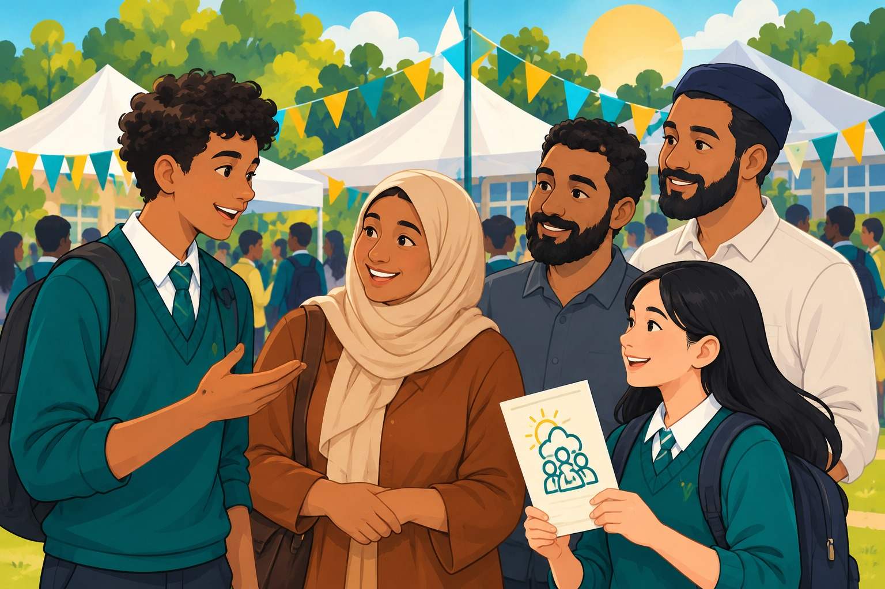

Tier 1: Universal
Years 7–8 HPE classes and whole-school festival participation for every student.
Section 4 / 10-hour student-led initiative
A structured, student-centred program that builds health literacy, leadership and a supportive school culture, culminating in an Unclouded Peer Festival.

01 Project structure
A 10-hour whole-school model for Years 7–12: universal HPE, targeted peer leadership, and a community festival. Delivery is blended across curriculum, wellbeing time and a whole-school event.
Years 7–8 HPE classes and whole-school festival participation for every student.
15 Year 9–10 Wellbeing Champions co-design stalls, media and peer facilitation.
Nurse check-ins and headspace Melton pathways for students who need extra care.
Hour 1 Commercial hacks · Hour 2 Norm correction · Hour 3 Refusal mastery · Hour 4 OurFutures e-learn.
Hour 5 Leadership & safety · Hour 6 Campaign co-design · Hour 7 Festival stall prep.
Hours 8–9 Unclouded Peer Festival · Hour 10 multilingual CALD family showcase.
02 Module 1 (Hours 1–4)
Year 7–8 HPE core classes. All students build critical media literacy, correct peer-vaping myths, practise refusal skills, and complete OurFutures digital modules.
Analyse vape packaging, flavouring and social media ads that target adolescents (Gardner et al., 2025).
Compare guessed peer vaping rates with AIHW and Victorian data to correct social-norm inflation.
Practise CLEAR refusal scripts in peer scenarios to build Bandura’s mastery source of self-efficacy.
Complete OurFutures interactive storylines on nicotine, decision-making and help-seeking.
03 Module 2 (Hours 5–7)
15 Year 9–10 Wellbeing Champions in wellbeing/elective time. They move from “doing to” to “doing with”: safety protocols, campaign assets and festival logistics.
Leadership briefing on Hart and Mitra, then co-establish the Adult Safety Review Protocol to avoid norm inflation.
Co-design posters, digital graphics and multilingual templates in Canva, then review them against the safety protocol.
Design six interactive stalls, recruit volunteers, and finalise the operations plan, risk assessment and equipment list.
04 Module 3 (Hours 8–10)
Whole-school grounds and auditorium. Years 7–12, staff, families and community partners take part in a student-led festival and CALD showcase.
Students rotate through six peer-led stalls in an extended lunch block, with nurse and headspace Melton hubs on site.
Evening gathering with student presentations, bilingual flyers and two-way conversations with East African, South Sudanese and South Asian families.
05 Unclouded Peer Festival map
Interactive stalls designed and run by students, for students and the wider school community — not a written exam or teacher presentation.
Peer-norm correction with AIHW prevalence stats, quizzes and prizes.
Live refusal role-plays and assertiveness games using CLEAR scripts.
Healthy alternatives, stress management and a wellbeing challenge.
Voluntary cessation plans and self-referral bookings without discipline.
Youth mental health information and external care pathways.
Bilingual flyers and CALD liaison conversations with families.
See how the 10-hour plan maps to Victorian Curriculum F–10 and whole-school evaluation.
Proceed to curriculum mapping →